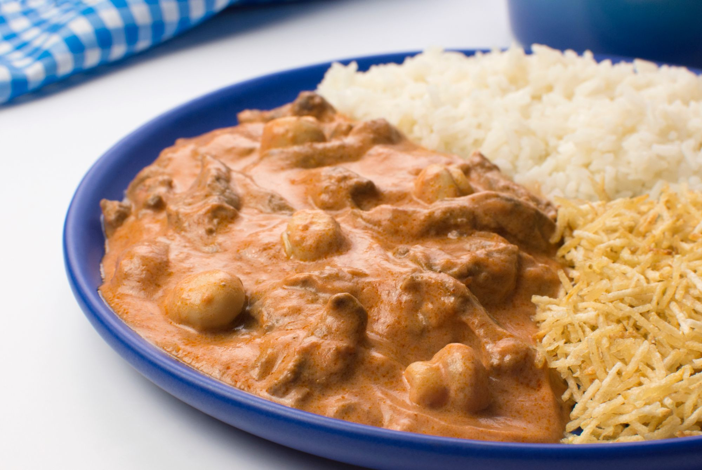

Close Menu
Home Page
Feijoada
Pizza Doce
Coxinha
☰
Cartas
Famous Foods of Brazil
Estrogonofe de Carne

Ingredients
1 tablespoon of oil
2 chicken breast or 1 medium sized beef steak
1 medium onion, minced
1 medium tomato, minced
1 clove of garlic, minced
1 cube of bouillon
2 tablespoons of tomato extract
2 tablespoons of mustard
2 tablespoons of ketchup
1/3 cup of table creme
2 tablespoons of cream cheese
Rice cooked
Potato sticks
Instructions
Put the oil in a big saucepan and sauté the minced onion and garlic for about 3 minutes.
Mix in the meat with the bouillon and brown the meat (white for chicken) for about 5 minutes.
Add the tomatos and let the meat simmer until the tomatoes dissolve and the meat is throughly cooked.
Mix in the tomato extract, mustard, and ketchup until dissolved.
Add the creme and cream cheese and mix well.
Then add salt to taste and serve with rice and potato sticks.